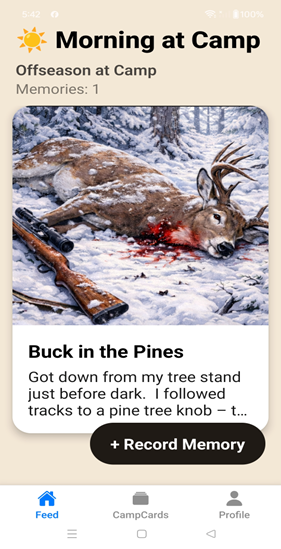

A Real DeerCamp Story
Recorded in DeerCamp


The Buck in the Pines
Got down from my tree stand just before dark.
I followed tracks to a pine tree knob — they went in but never came out.
I stared into the pines as the sun was setting and saw the rack of a buck move.
I found him in my scope and moved the crosshairs to his throat patch.
One shot. Down he went.